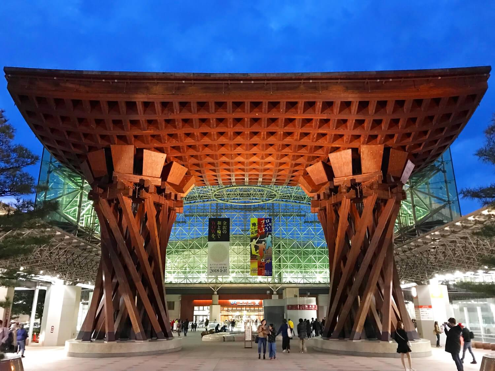
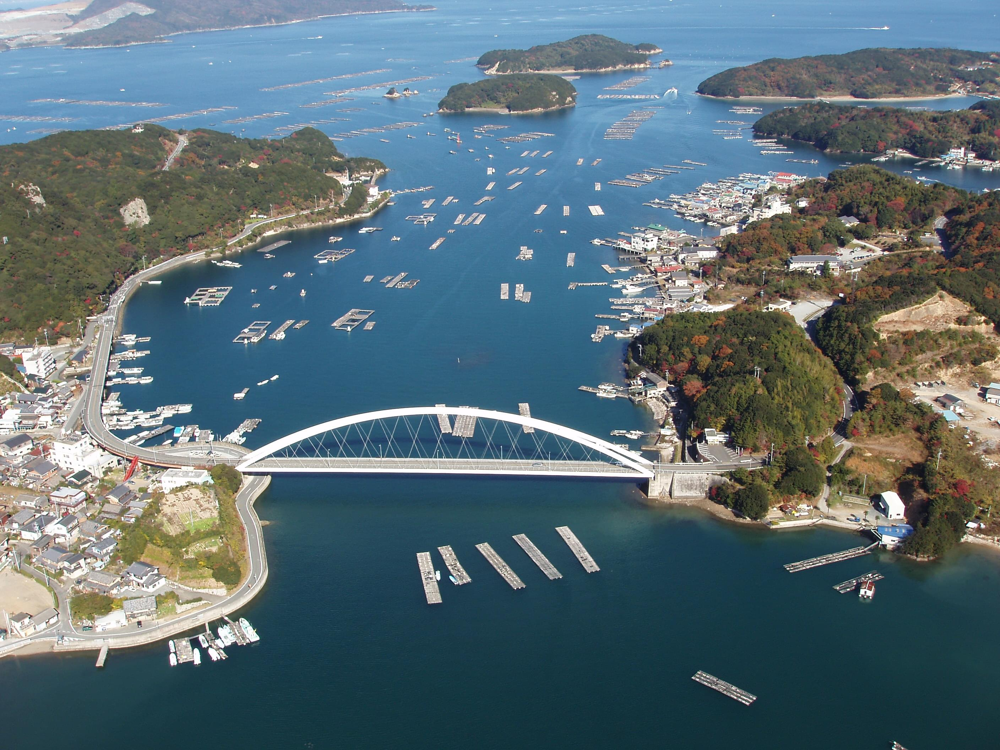

こんばんは！こんにちは！おはよう！![]() 急に書くことになったので、ラスボスが１８日という恐ろしい日に現れちゃいました。ラスボスじゃないけどね！新年の１日に行こうと思ってたんだけど、今日にします！こんなに遅くなって申し訳ない！
急に書くことになったので、ラスボスが１８日という恐ろしい日に現れちゃいました。ラスボスじゃないけどね！新年の１日に行こうと思ってたんだけど、今日にします！こんなに遅くなって申し訳ない！
新年の抱負かー。ありますね。今年はたくさん旅行できた。シンガポール２回、韓国１回、沖縄４回（！）、アメリカ２回、長野１回。その中で、ピアノも買ったし、飲み会はたくさん行ってるし。つまり、お金はもうないんです！![]()
実は、シンガポールは仕事で、沖縄はアメリカの大学院に入るための試験を受けるためで、それらはしょうがなかったね。払うしかない、お金はバイバイ。![]()
でも今度は違う！もう大学院の申込みは今日で終わったよー！シンガポールは出張だったけど、楽しかった！生徒とも行ったし、面白かった、でも、もう拒否しちゃいます！頼まれたら「いや、無理っす」って。自分の人生があるんだよね！なぜこれらのことを言うかというと、来年の抱負は「日本国内をもっと旅行する」ということです。いろいろなところに行きたいと思います！（本当に今までは長野にしか行ってない、そういうのありなの？！）
ということで、今回のトピックは「新年の抱負」ではない！実は「どこかに行ってみたいところ」なんです。「新年の抱負」でもあるんだけどな・・![]()
まあ、いい。ササッと行きましょうか！まずは、京都と大阪に行きたいね。やっぱりそれが最初だ。実は2017年に6週間ぐらいICUで留学したことがあって、そしてその年の海の日は友達と京都に日帰りで行ったんだけど、また行きたいよね～。今回は現場には友達がいるし、もっとお金が貯めてあるし、日本語も前よりもっとわかってるし、1月が良いかな！1月すぐ！それは夜行バスで行こうかなあぁ。
次は友達がいるから兵庫に行きたいです！はい、兵庫の説明が終わりです！（本当は兵庫についてあまり何も知らないから）次！
1月には長野で、3月には北海道に行きたい。子供の頃からずっと絶対に毎年スキーをしてるから、それは日本で続けたい。去年も滑ったし、今年も行かなくちゃ。行く。一人に行ってもな！（2月は両親が日本に来るからそれはちょっと飛ばしちゃったね）![]()
次は普通に観光で石川県に行きたいと思う。実は今の仕事に申し込んでたときは「どこで働きたい」という質問があって、第1希望は東京だったけど、第2は石川県の金沢市だったね。街はきれいだし、雪も大好きだし、行ってみたい。とりあえず行ってみたい。行く。でもな、もしも英語の教師の仕事はそこになっていたら、今の人生はどう変わっていたのだろうかって、実によく考えるんですね。今の東京の人生は結構好きだけどね！友達がたくさんいるし、オフ会もよくやるし。でも石川県も自分なりの楽しみも会ったんだろうなと思う。時に振り替えて、「今の自分の人生って偶然の連続の結果にすぎない」と考えるのも悪くないね。![]()
ちょっと、話が、脱線しちゃって・・
えっと ![]() 次！
鳥羽市に行きたいです！それは「とば し」。聞いたことがないと言うんですか。大丈夫！僕の大学の姉妹都市でしか有名じゃない！それでも有名じゃないか！でも本当にきれいそうなところだよ！海があるし、えっと、きっといい店もあると思う！とりあえず行く。
次！
鳥羽市に行きたいです！それは「とば し」。聞いたことがないと言うんですか。大丈夫！僕の大学の姉妹都市でしか有名じゃない！それでも有名じゃないか！でも本当にきれいそうなところだよ！海があるし、えっと、きっといい店もあると思う！とりあえず行く。
え、いつの間にこんなに長くなっちゃったの？誰がやった、これ？！最後の2つに行こう。まずはYukiさんに会いに名古屋に行きたい。そして、福岡に行きたい。遠いし、行ったことがないし、そこの煮込みが美味しいと聞いたから。それぐらいです。本当は美味しくないかもしれないけど、とりあえず行く。（あれ、何か繰り返してない？![]() ）
）
そして「本当は行きたいけどこれ以上読ませるのはかわいそうから簡潔で！」のリスト：広島、富士山・箱根、静岡、つくば、茨城、新潟、青森。簡潔だったでしょう！
あ！今年の雪まつりは2月なのか・・・・じゃあぁ北海道は2月！3月は今となって予定募集中！友達も募集中！ACを終わりにします。読んでくれてありがとう！![]()
(For those that can’t read Japanese but for some reason are reading this channel, I wrote a boring English version. For those that can read Japanese, its better)
Hello, good evening, good morning, wherever you are. It suddenly came to me to write this so here I am, a bit earlier than I expected… 😮
New Year’s Resolution? Hmm, I’ve got that. This year, I went on tons of vacations. Singapore twice, Korea once, America twice, Nagano once, and Okinawa four times (!). Also, I bought a piano, went to lots of work parties… basically, I don’t have any money left!
Actually, Singapore was for work, and Okinawa for a test for graduate school (GRE), so those couldn’t be helped. But this year is different! I’m not going on any more trips abroad. This year is the year of traveling in Japan! Which means, my topic for this year’s advent calendar is actually NOT “my new year’s resolution”, but instead “Places I want to go” (although it’s also my new year’s resolution).
Anyway, first I wanna go to Osaka and Kyoto. Gotta go there, right? Actually I went with a friend in 2017, but I wanna go now that I have friends actually there, I know more Japanese, lots of reasons!
Next I want to go to Hyogo, because I have a friend there. I don’t really know anything else about the place! Ok next!
Next, I want to go to Ishikawa just for tourism. Not really any special reasons. I think it looks pretty there. Also maybe my job was going to be put there but my English isn’t good enough to explain that story. Read my Japanese.
After that, I wanna go to a place called Toba. It’s the sister city of my college town. That’s really all I know about that place. It looks pretty.
From here, the list gets much more brief. I wanna go to Nagoya to meet Yuki, and Fukuoka to eat nikomi. Finally, Hiroshima, Fuji/Hakone, Shizuoka, Tskuba, Ibaraki, Niigata, Aomori. And that’s it. There’s my AC finished! Sorry for my bad English, is not very good. Read the Japanese for the real AC. Thanks for reading!
写真：
金沢駅
https://s3-ap-northeast-1.amazonaws.com/tabi-channel/upload_by_admin/kanazawa_hotel_image_1_origin.jpg
鳥羽市
http://www.toba.gr.jp/cms/wp-content/uploads/P1010248.jpg
もし、このバカでかい投稿を直してくれる方がいらっしゃいましたら、そしてもしもこっちのほうが使いやすいのだったら、どうぞ GDOC でコメントを下さい: https://docs.google.com/document/d/1N6Uc9aQ3V2xd1jypG5Cf64FvhG6an2MPfnkoHuM93qM/edit?usp=sharing


![]()
![]()
![]() My imaginary traveling starts now!!! Heeeeeeheee!!!
My imaginary traveling starts now!!! Heeeeeeheee!!!![]()
![]()
![]()
![]()
![]()
![]()
![]()
![]()
![]()
![]()
![]()
![]()
![]()
![]()
![]()
![]()
![]()
![]()
![]()
![]()
![]() やるだけやってみよう
アドベント・カレンダー
12.24.2019
クリスマスの前夜
やるだけやってみよう
アドベント・カレンダー
12.24.2019
クリスマスの前夜![]()
![]()
![]()
![]()
![]()
![]()
![]()
![]()
![]()
![]()
![]() しかも、恋愛の初心者である自分に恋人までできて今になってはもうとんでもない幸せ者です
しかも、恋愛の初心者である自分に恋人までできて今になってはもうとんでもない幸せ者です ![]() こうして他人と接することが多くなるにつれ、自分をその人達と比べることも多くなりました。自分のどういうところが良いのかが明らかになり、それと同時に自分の直さなければならないところが思った以上にあることが分かりました。しかし、自分の長所を知っていながらもそれを軽視し、自分の欠点にばかり気を取られ、なぜほかの人はこれができて自分はできないのだ、と自分に自信を無くして自分は羨望の眼差しを他人に向けたのでありました。そういった嫉妬心が募る一方ではありましたが、これを克服するために、来年は「他人を妬まずに、自分の特性をしっかりと把握し、自分磨きに励む」ことに専念したいと思います。こうすれば、理想の自分への第一歩を踏み出すことができると信じています
こうして他人と接することが多くなるにつれ、自分をその人達と比べることも多くなりました。自分のどういうところが良いのかが明らかになり、それと同時に自分の直さなければならないところが思った以上にあることが分かりました。しかし、自分の長所を知っていながらもそれを軽視し、自分の欠点にばかり気を取られ、なぜほかの人はこれができて自分はできないのだ、と自分に自信を無くして自分は羨望の眼差しを他人に向けたのでありました。そういった嫉妬心が募る一方ではありましたが、これを克服するために、来年は「他人を妬まずに、自分の特性をしっかりと把握し、自分磨きに励む」ことに専念したいと思います。こうすれば、理想の自分への第一歩を踏み出すことができると信じています ![]()
![]()
![]()
![]() それで、今年のエントリー、練習するように辞書とか参考しないで身につけた日本語だけで書きたかったんだ。
それで、今年のエントリー、練習するように辞書とか参考しないで身につけた日本語だけで書きたかったんだ。![]() 。最近ジャズのスタイルの曲などもすきになったからいま他のスタイルをひいてみている。
。最近ジャズのスタイルの曲などもすきになったからいま他のスタイルをひいてみている。
![]() 。もっと詳しく言いたいけど私の語彙だけで説明するのがやっぱり無理でしょう。私来年のAC（いまより勉強したあと）このトピックをもう一回やるかもしれない
。もっと詳しく言いたいけど私の語彙だけで説明するのがやっぱり無理でしょう。私来年のAC（いまより勉強したあと）このトピックをもう一回やるかもしれない ![]() 。
。{kind=link}
{kind=link}